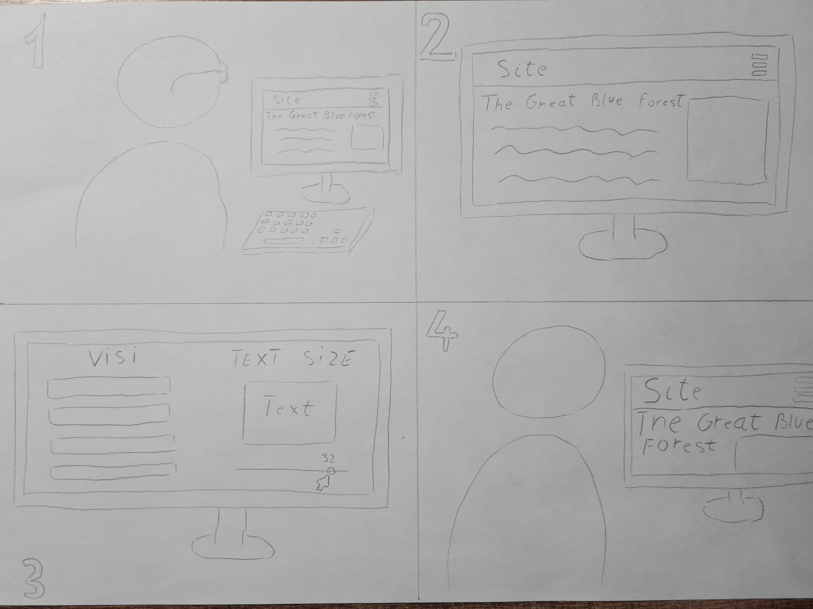
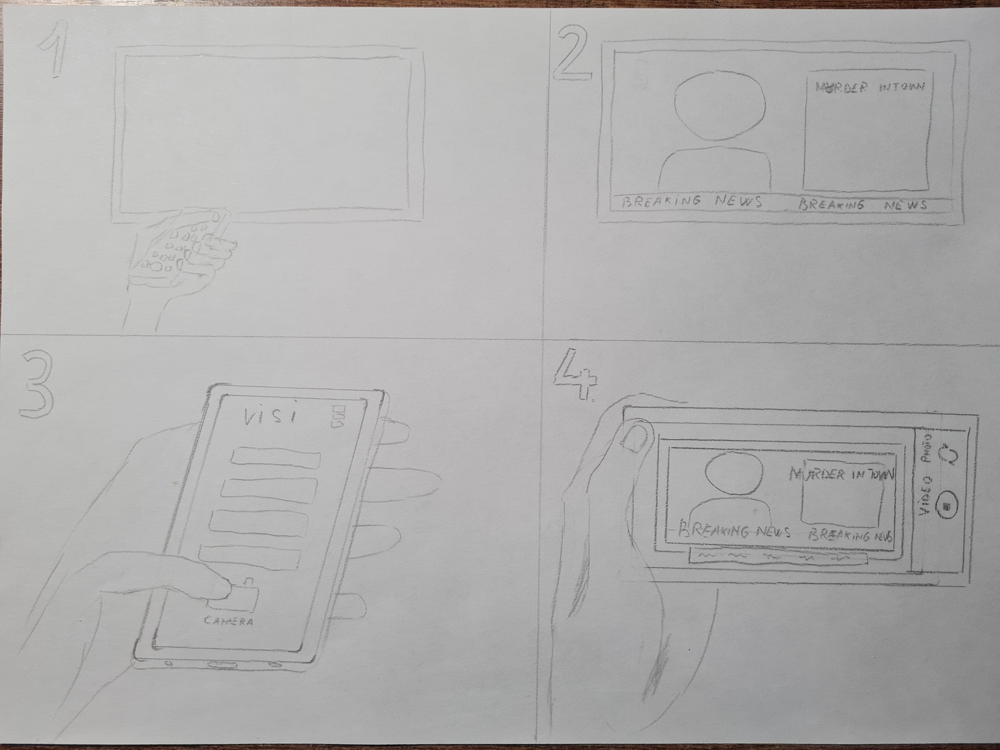
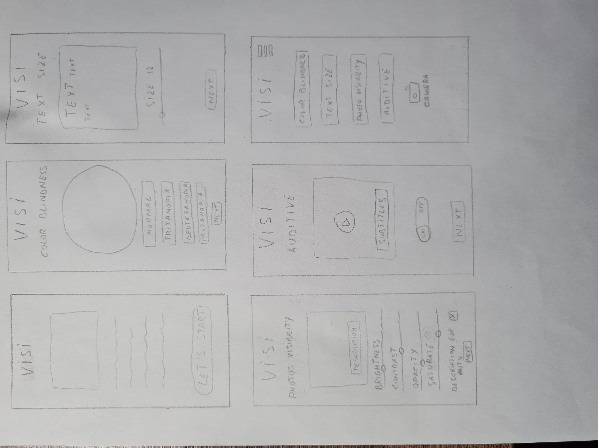
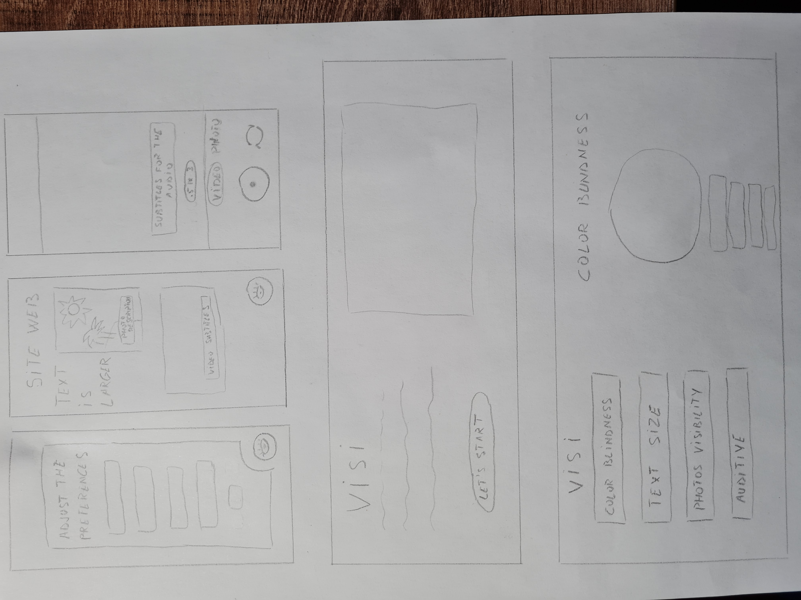

Visi - Visual Impairment Smart Assistant
Introduction
The Visual Impairment Smart Assistant is specifically designed to provide assistance and support for
individuals with various visual impairments, such as low vision, myopic vision, color blindness, light
sensitivity and even hearing problems. Our primary objective is to enhance the user experience and improve the accessibility of digital
content for these users, making their everyday activities easier and more enjoyable.
Interaction Types/Paradigms
- Gesture-based navigation: The app utilizes intuitive gestures for navigation and control, reducing the reliance
on visual cues and making it more accessible for users with visual impairments.
- Specific visual preferences: We offer customizable visual settings within the app, allowing users with low
vision or color blindness to adjust and distinguish elements on the screen according to their specific needs.
Proposed Approach
Our app combines artificial intelligence, augmentet reality and user-friendly design to provide a seamless and inclusive experience.
Leveraging computer vision algorithms, the app can analyze and interpret images, enabling features such as text
resizing, color blindness ajustment, and picture editing. Additionally, the app is highly customizable, allowing users to
personalize the interface based on their unique requirements and preferences.
Product Functions
- Account
- Users can manage their account within the app, including profile information and preferences.
- Color blindness settings
-
Users can adjust the color scheme of the app's interface to accommodate different types of color blindness.
- Text size adjusting
-
Users can modify the text size of web pages and other textual content to ensure readability.
- Photo visibility
-
Users can adjust the brightness, contrast, opacity, and saturation of images to enhance visibility and
distinguish details.
- Users can activate or deactivate image descriptions for better understanding and context.
- Auditive
-
Users can activate or deactivate subtitles for videos to aid in understanding the audio content.
- Camera
-
Users can utilize the phone's camera to apply the chosen accessibility settings to the real-world
environment.
- Users can capture photos using the camera, with the option to view text in larger size, apply different
color schemes, and even receive descriptions of the content.
- Users can use the camera for real-time video processing, adjusting text, colors, and subtitles in the live
feed.
Storyboards
1. Desktop Storyboard
- User opens one web site.
- The text size is small.
- User opens the app and increasses the text size.
- Now the text on the web site is more larger and easier to read.

2. Mobile Storyboard
- User opens the tv.
- He can't hear or see very cleary the important news.
- User opens the app.
- Using the camera, he can see the text more larger on the screen and the subtitles for the audio.

Wireframe
1. Mobile Wireframe

2. Desktop Wireframe
